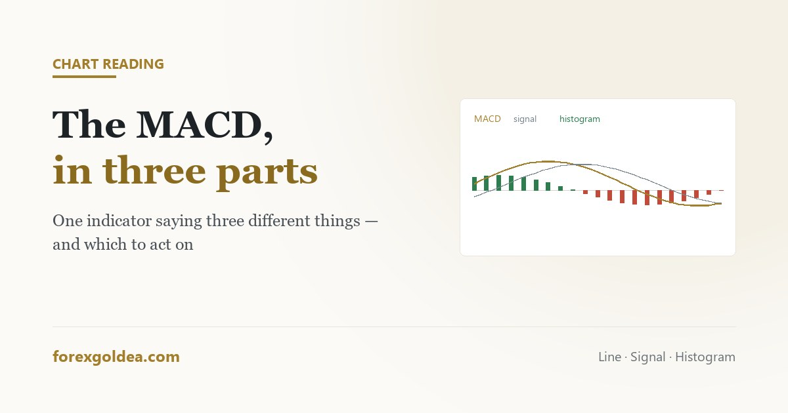

The MACD, and the three things it is telling you

The MACD looks like one indicator and is really three, stacked in the same window and saying slightly different things. Most of the confusion around it comes from reading the crossover — the slowest of the three — as though it were a timing signal, which on an instrument that moves like gold is an expensive habit.
In short the MACD compares two moving averages of price. The MACD line is the distance between a fast and a slow average, the signal line is a smoothed version of that, and the histogram is the gap between the two. All three describe momentum, not value. The crossover everyone watches is the slowest reading available and on gold it typically arrives well after the move has begun. The genuinely useful readings are the histogram shrinking while price still advances, and the position of the whole indicator relative to zero — above means the fast average leads, below means it lags.
Three components, three separate messages
Open the MACD and you get a line, a second line, and a set of bars. They are related, but each answers a different question.
| Component | What it is | What it tells you |
|---|---|---|
| MACD line | 12-period average minus 26-period average | How far apart short and medium-term momentum have moved |
| Signal line | A 9-period average of the MACD line | A smoothed reference, so crossings can be defined |
| Histogram | MACD line minus signal line | Whether that gap is widening or closing — the fastest of the three |
Notice that everything here derives from moving averages, which means the MACD inherits their lag by construction. It cannot tell you what is about to happen; it describes what recent price has already done, in a form that is easier to read than the price itself. The same trade-off applies to moving averages generally.
The crossover, and why it is late on gold
The textbook signal is the MACD line crossing above the signal line, read as bullish, and below as bearish. This is genuinely a real event — it means short-term momentum has overtaken the smoothed version of itself.
It is also, structurally, the last thing to happen. Price has to move, then the fast average has to respond, then the gap between averages has to change, then that gap has to cross its own nine-period average. Four layers of lag sit between the market and the signal.
The crossover is therefore better used as context — a description of which side momentum currently favours — than as an entry trigger.
The zero line, which most people ignore
The more useful structural reading is simply whether the MACD sits above or below zero.
Above zero means the 12-period average is above the 26-period one: short-term momentum is leading. Below zero means it is lagging. That is a slow, stable read on which direction the market has been leaning, and it changes far less often than the crossover does.
Used as a directional filter — only taking long setups while the MACD is above zero, only shorts below — it does the same job a moving average filter does, with fewer false switches. It will not find entries. It will stop you taking setups against the prevailing lean, which on gold is where a lot of money goes.
The histogram, and the one reading worth acting on
If the MACD offers anything genuinely forward-looking, it is here.
The histogram measures the gap between the MACD and signal lines. When that gap starts closing while price is still making new highs, momentum is fading even though the price has not turned yet. The move is being carried by less force than it was.
This is the same observation as RSI divergence, arriving through a different calculation — and it carries the same honest caveat. It identifies real loss of momentum, and it is early far more often than it is timely. In a strong gold trend the histogram can shrink and re-expand several times before anything turns.
So treat it the way divergence deserves to be treated: as a reason to tighten a stop or take partial profit on a position you already hold, not as a reason to reverse.
Settings, and the temptation to fiddle
The default is 12, 26, 9. These numbers date from a period when markets traded a six-day week, which people occasionally cite as a reason to change them.
Resist. Shortening the periods makes every component more reactive and multiplies false crossovers; lengthening them adds lag to an indicator that already has plenty. More importantly, hunting for the setting that would have worked best on the last six months of gold is curve fitting in its purest form, and the number you land on has no reason to work on the next six.
On timeframe, the same rule as every momentum tool: the 4-hour and daily charts produce readings that mean something. On the 5-minute chart the MACD crosses constantly and most of those crossings describe spread and noise.
Putting it to work without overtrusting it
- Direction: above zero, favour longs. Below zero, favour shorts. Let this be a filter, not a signal.
- Context: a recent crossover confirms which side momentum has taken. It does not tell you the move is fresh.
- Warning: histogram shrinking while price extends — protect profit, do not reverse.
- Entry: from price structure and a level, with the stop set where the idea would be wrong. The MACD does not decide this.
Used that way it is a decent second opinion. Used as a crossover-entry system on a fast gold chart, it is a reliable way to be late in both directions.
Reader questions
What does the MACD indicator actually measure?
It measures the gap between two moving averages, and compares that gap to its own average. It describes momentum, not value.
Is a MACD crossover a good entry signal on gold?
Rarely — it is the slowest reading available, so on gold it typically arrives after much of the move has already run.
What is the MACD histogram telling me?
The gap between the MACD and signal lines. A shrinking histogram during rising price means fading momentum.
What is the best MACD setting for gold?
The default 12, 26, 9 on the 4-hour or daily. Custom values are usually fitted to past data rather than durable.
What does it mean when MACD is above or below zero?
Above zero, short-term momentum leads; below, it lags. It works better as a direction filter than the crossover does.
Should I use MACD or RSI on gold?
They overlap heavily. One momentum tool understood well beats running both and treating agreement as confirmation.
Where this leaves you
The MACD is three readings wearing one name, and the popular one is the least useful. Take the zero line as a direction filter, the histogram as an early warning worth protecting profit against, and leave the crossover as background context rather than a trigger. Read that way it earns its place on a gold chart; read as an entry system, it will keep arriving just after the move it was meant to catch.
Affiliate disclosure: we earn a commission when you open and fund an account through our partner links, at no extra cost to you.